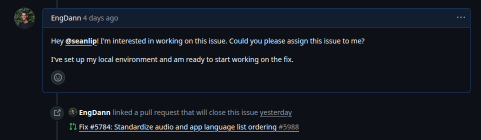
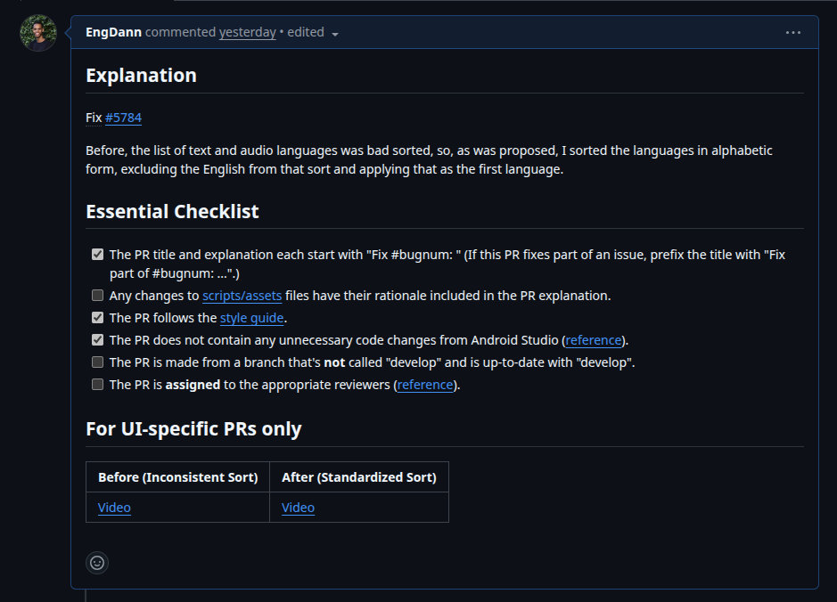
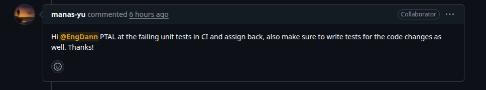
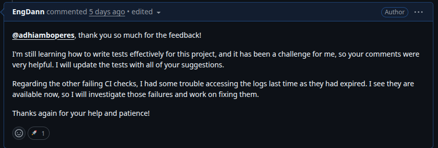

Diário de Bordo – Danilo de Melo Ribeiro
Disciplina: Gestão da Configuração e Evolução de Software\ Equipe: Oppia\ Comunidade: Oppia
Sprint 0 – [25/08 – 10/09]
Resumo da Sprint
Esta sprint inicial teve como foco a integração ao projeto Oppia e a estruturação da equipe. Os objetivos principais foram realizar o onboarding no ecossistema do projeto, compreender suas diretrizes de contribuição e configurar o ambiente de desenvolvimento para futuras contribuições.
Atividades Realizadas
| Data | Atividade | Tipo (Código/Doc/Discussão/Outro) | Link/Referência | Status |
|---|---|---|---|---|
| 25/08 | Criação do fork do repositório oficial | Código | Github | Concluído |
| 25/08 | Análise da documentação e arquitetura do projeto | Estudo | Overview-of-the-Oppia-codebase | Concluído |
| 04/09 | Mapeamento das diretrizes de contribuição e qualidade | Estudo | Oppia Wiki | Concluído |
| 06/09 | Alinhamento da estratégia de trabalho da equipe | Discussão | Reunião interna da equipe | Concluído |
| 06/09 | Configuração do ambiente de desenvolvimento (Linux) | Código | Installing Oppia (Linux; Docker) | Concluído |
| 09/09 | Criação do relatório de contribuição individual | Doc | - | Concluído |
| 10/09 | Preenchimento dos formulários para iniciar comunicação com a comunidade | Formulário | Forms | Concluído |
Maiores Avanços
- A equipe foi organizada e o fork do repositório, que servirá como base para as contribuições acadêmicas, foi criado com sucesso.
- Foi obtida uma compreensão clara das políticas de contribuição, padrões de qualidade e fluxos de comunicação da comunidade Oppia.
- O ambiente de desenvolvimento foi configurado e executado localmente com sucesso via Docker.
Maiores Dificuldades
- O processo de build inicial do projeto foi extenso, exigindo um alto consumo de recursos computacionais.
Aprendizados
- Compreensão aprofundada da estrutura do projeto Oppia, seu fluxo de trabalho e a organização da comunidade, incluindo os diferentes papéis e responsabilidades.
- Aprofundamento prático em Docker, ferramenta escolhida para a configuração do ambiente.
Plano Pessoal para a Próxima Sprint
- [ ] Mapear e selecionar issues relacionadas a CI/CD e DevOps para alinhar as contribuições com os meus objetivos pessoais e aproveitar ao máximo a disciplina.
- [ ] Iniciar a colaboração ativa com a equipe e os mantenedores do Oppia para solucionar a issues escolhidas.
- [ ] Aplicar e consolidar os conhecimentos de CI/CD e DevOps através da contribuição prática no projeto.
Sprint 1 – [10/09 – 24/09]
Resumo da Sprint
Nesta sprint, eu reavaliei meu foco inicial no projeto. Descobri que o Oppia mantém um repositório dedicado ao Android, uma área que despertou muito mais meu interesse. Com isso, decidi concentrar meus esforços em compreender a fundo este novo repositório, sua estrutura e seus objetivos. Para me integrar mais rapidamente, entrei em contato com um contribuidor experiente do projeto e participante do GSoC, que me ajudou a esclarecer diversas dúvidas técnicas e sobre a comunidade.
Atividades Realizadas
| Data | Atividade | Tipo (Código/Doc/Discussão/Outro) | Link/Referência | Status |
|---|---|---|---|---|
| 15/09 | Identificação e análise inicial do repositório Oppia-Android | Estudo | GitHub: oppia-android | Concluído |
| 16/09 | Estudo da arquitetura e das diretrizes de contribuição do Android | Estudo | Wiki: Developing for Oppia-Android | Concluído |
| 18/09 | Primeiro contato com um dos contribuidores da comunidade | Discussão | Comuinicação direta | Concluído |
| 19/09 | Tive uma conversa com o mantenedor para esclarecer dúvidas sobre o projeto | Discussão | Comunicação direta (Discord/GitHub) | Concluído |
| 22/09 | Configurei o ambiente de desenvolvimento específico para o Android | Código | Guia de Instalação | Concluído |
Maiores Avanços
- A descoberta de uma área no projeto (Android) que me motiva genuinamente a contribuir.
- A conversa com o mantenedor foi fundamental. Ele compartilhou conhecimentos que aceleraram minha compreensão do projeto e da dinâmica da comunidade.
- Agora tenho um entendimento claro da estrutura do projeto Android e de por onde posso começar a aplicar minhas habilidades.
Maiores Dificuldades
- A principal dificuldade foi a percepção de que meu foco inicial não era o ideal, o que consumiu parte do tempo da sprint e gerou a necessidade de correr atrás do prejuízo.
- A configuração do ambiente de desenvolvimento foi desafiadora. O Android Studio exige muitos recursos computacionais, o processo de setup é longo e, após várias tentativas, a única versão que se mostrou compatível foi a "Giraffe".
Aprendizados
- Aprendi como é importante encontrar uma área de contribuição que esteja alinhada com meus interesses, pois a diferença na motivação é enorme.
- Percebi que a comunicação proativa com membros experientes é uma ferramenta muito eficaz para acelerar o aprendizado.
- Obtive um conhecimento prático valioso sobre a arquitetura de um aplicativo Android de código aberto e em larga escala.
Plano Pessoal para a Próxima Sprint
- [ ] Identificar e selecionar duas
good first issuesou tarefas de escopo similar para começar a contribuir com código. - [ ] Focar na implementação para compensar o período de estudo e adaptação desta sprint.
- [ ] O objetivo principal é submeter, 2 Pull Requests (PRs) de qualidade.
Sprint 2 – [24/09 – 08/10]
Resumo da Sprint
Esta sprint foi dedicada à imersão na arquitetura Android do projeto Oppia e à conclusão da primeira contribuição de código. O foco principal foi entender os padrões de código (MVP/MVVM/MVC), o uso de Dagger para injeção de dependência, e as diretrizes de testes do projeto. Embora o objetivo inicial de submeter múltiplos PRs não tenha sido totalmente atingido devido à complexidade do código, um PR inicial foi aberto com sucesso para resolver um bug de ordenação de idiomas, validando a correção da lógica implementada.
Atividades Realizadas
| Data | Atividade | Tipo (Código/Doc/Discussão/Outro) | Link/Referência | Status |
|---|---|---|---|---|
| 25/09 | Estudo da arquitetura, padrões do código, injeção de dependência | Estudo | Documentação do Oppia e código-fonte | Concluído |
| 04/10 | Identificação e análise do good first issue sobre ordenação de idiomas |
Discussão/Estudo | Issue #5784 | Concluído |
| 06/10 | Implementação da lógica de ordenação para idiomas de app e áudio | Código | Snippets de código e arquivos ViewModel modificados |
Concluído |
| 07/10 | Criação e abertura do Pull Request para correção da ordenação | Código | PR #5988 | Aberto |
| 08/10 | Recebimento de feedback do mantenedor sobre testes em CI | Discussão | Comentário do revisor na PR | Em Análise |
Maiores Avanços
- O primeiro Pull Request (#5988) foi aberto, marcando a primeira contribuição de código ao projeto.
- Houve uma grande evolução na compreensão dos padrões de codificação do Oppia, algo essencial para mexer em um projeto tão complexo.
Designado para a task #5784:

PR aberto:

Comentário do mantenedor:

Maiores Dificuldades
- A complexidade e o tamanho do código-fonte do Oppia-Android exigiram muito tempo de estudo, o que impactou o plano inicial para esta sprint.
- O principal obstáculo atual é a escrita de testes para validar a alteração e o continuo aprendizado sobre o projeto. O PR recebeu feedback solicitando a correção de testes em CI e a adição de novos testes para a funcionalidade modificada.
Aprendizados
- Aprendi na prática que em grandes projetos de código aberto, a qualidade do teste é tão crucial quanto a qualidade do código em si, e muitas vezes é o principal bloqueador para o merge.
Plano Pessoal para a Próxima Sprint
- [ ] Resolver o feedback do PR #5988, focando na escrita dos testes para a lógica de ordenação de idiomas.
- [ ] Identificar uma nova tarefa
good first issuee garantir um segundo PR mergeado.
Sprint 3 – [08/10 – 22/10]
Resumo da Sprint
Esta sprint foi dedicada a resolver o feedback técnico do Pull Request #5988. O foco foi a correção e implementação de testes. O processo foi iterativo: uma primeira tentativa de implementação gerou um feedback detalhado do mantenedor (com mais de 12 alterações solicitadas), o que levou a uma análise mais profunda dos testes já existentes. Ao final, todas as correções foram implementadas e submetidas para revisão novamente.
Atividades Realizadas
| Data | Atividade | Tipo (Código/Doc/Discussão) | Link/Referência | Status |
|---|---|---|---|---|
| 09/10 | Análise inicial da arquitetura de testes | Estudo/Código | Módulos de teste do Oppia | Concluído |
| 16/10 | Primeira tentativa de implementação dos testes solicitados | Código | Commits locais | Concluído |
| 17/10 | Discussão com o mantenedor sobre a abordagem e recebimento de feedback detalhado (+12 pontos de ajuste) | Discussão | Comentários no PR #5988 | Concluído |
| 20/10 | Implementação final de todas as correções e novos testes solicitados | Código | Commits no PR #5988 | Concluído |
Maiores Avanços
- Todo o feedback técnico do PR #5988 foi implementado. O PR agora contém as correções e testes solicitados, passando nas validações locais.
- Aprofundei meu conhecimento prático na suíte de testes do Oppia.
- O Pull Request está agora pronto para a revisão final do mantenedor.
Comentário do mantenedor sobre testes adicionados:
 - 17/10
- 17/10
Resposta ao mantenedor:
 - 17/10
Commits com as correções solicitadas:
 - 20/10
- 20/10
Maiores Dificuldades
- A principal dificuldade foi a complexidade da suíte de testes. A necessidade de analisar arquivos grandes e com contextos muito interligados tornou o processo de depuração e implementação mais lento que o esperado.
Aprendizados
- Em projetos grandes, é crucial entender como uma mudança afeta os testes já existentes para não introduzir regressões.
- Analisar e corrigir falhas apontadas pela CI é uma habilidade prática e indispensável para colaborar efetivamente.
Plano Pessoal para a Próxima Sprint
- [ ] Acompanhar ativamente o PR #5988, respondendo a qualquer novo feedback para garantir o merge.
- [ ] Identificar e ser designado para uma nova
good first issue. - [ ] Iniciar o desenvolvimento da nova issue com o objetivo de mergear um segundo PR até o final da sprint.